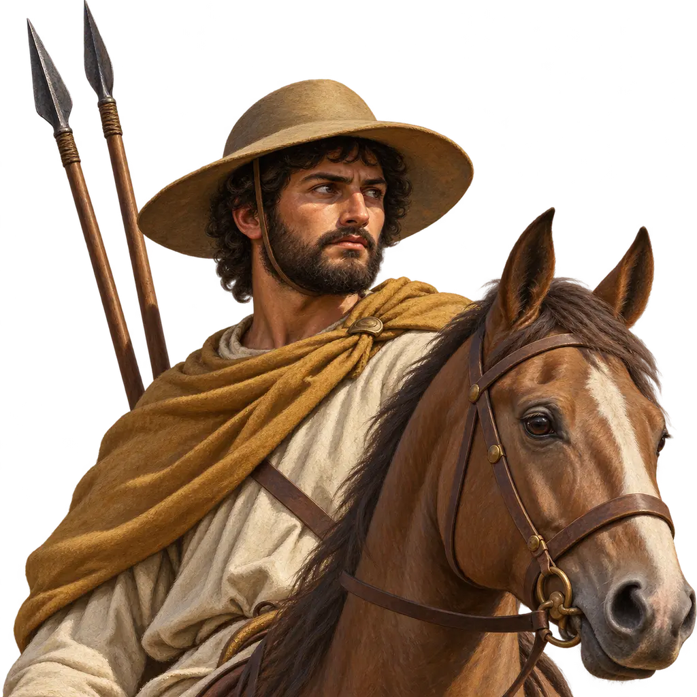
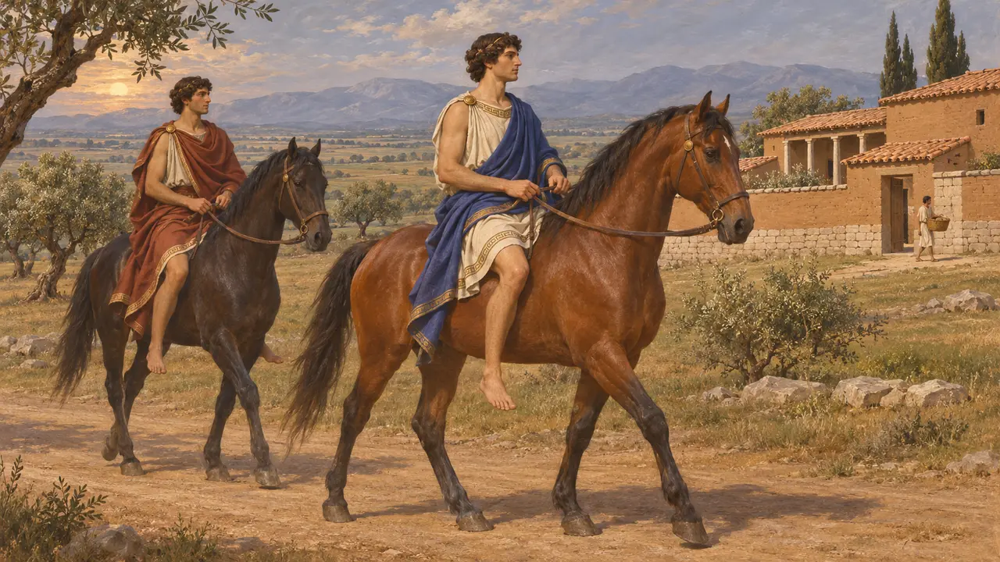
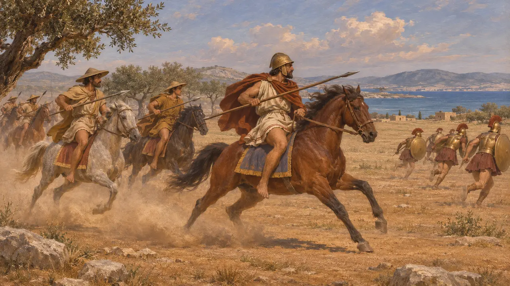
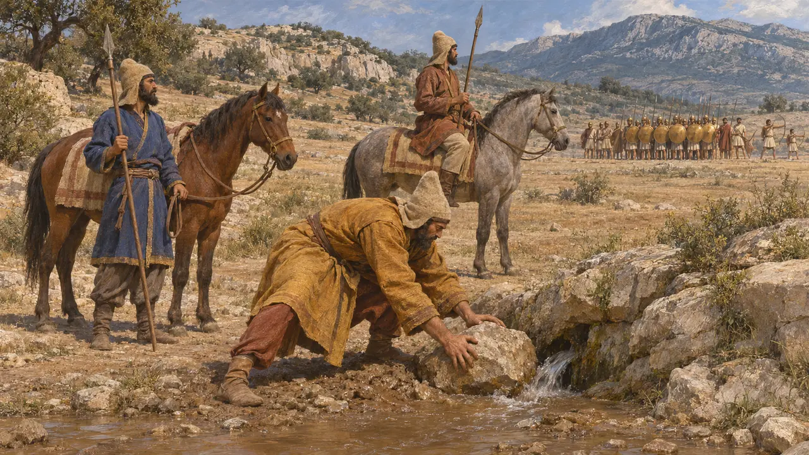
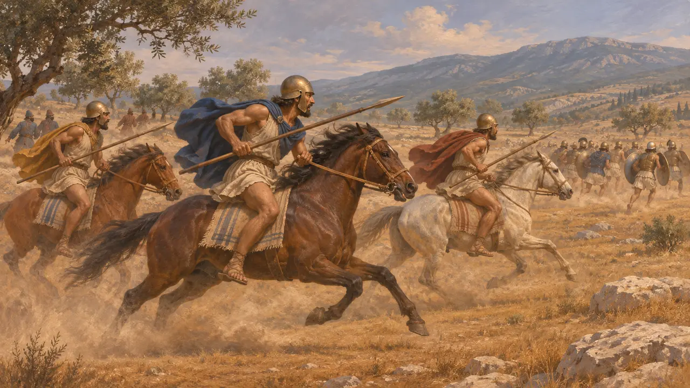
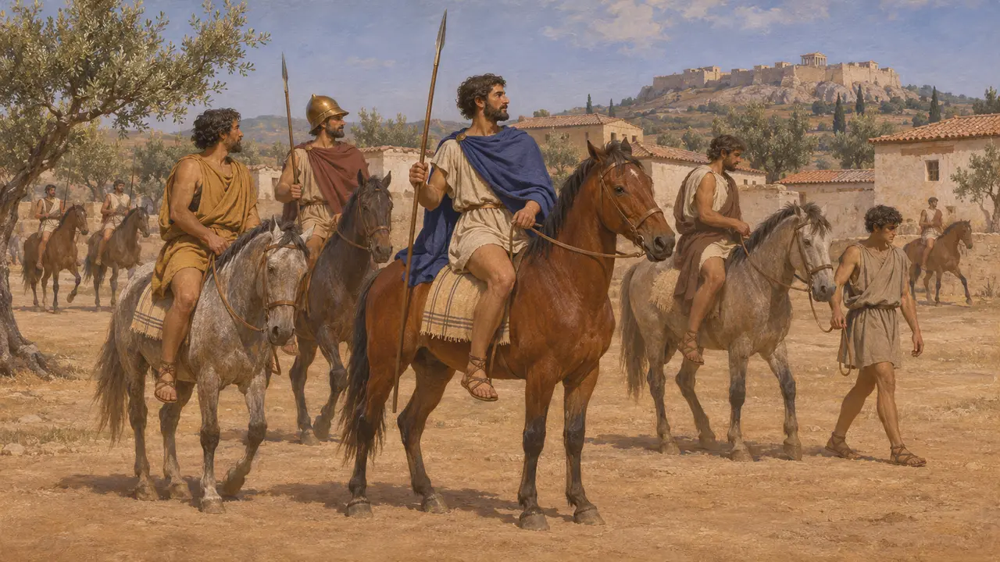

Энциклопедия › Воины и корабли

Греческие всадники
Конница греческих государств, сильнейшая в Фессалии и Беотии, ок. 550-479 гг. до н. э.
Греческие всадники происходили из богатых семей греческих государств. Сильнейшие из них были родом с открытых равнин Фессалии и Беотии. В войнах с Персией лучшая греческая конница сражалась на стороне Царя, тогда как союзное войско, победившее при Платеях в 479 году, почти целиком полагалось на пехоту.
В игре: В игре при Платеях выступает Греческий наездник. По Геродоту, в союзном войске Павсания конницы не было; греческими всадниками на том поле были фиванцы и другие беотийцы, а также фессалийцы, служившие Мардонию.

Кони как признак богатства
Свидетельства эпохиСодержать коня в материковой Греции было дорого: хорошие пастбища, кроме нескольких равнин, были редкостью. Афинская вазопись и надгробия конца VI века до н. э. изображают верхом юношей из богатых семей. Чаще всего они показаны в процессиях, на охоте или как конные спутники гоплитов, а не в атаке на поле боя.
G. R. Bugh, The Horsemen of Athens, 1988; I. G. Spence, The Cavalry of Classical Greece, 1993

Всадники Фессалии
Античное свидетельствоГеродот сообщает, что около 511 года до н. э. фессалийцы послали тысячу всадников во главе со своим царём Кинеем на помощь афинскому тирану Гиппию. На расчищенной равнине Фалера они разгромили спартанский отряд и убили его предводителя Анхимолия. Когда в 480 году до н. э. пришёл Ксеркс, фессалийцы перешли на его сторону. По словам Геродота, Царь устроил скачки между своими конями и фессалийскими, считавшимися лучшими в Греции, и персидские кони победили.
Herodotus 5.63; 7.172-174; 7.196

Союзное войско без конницы
Античное свидетельствоГеродот перечисляет в войске Павсания при Платеях гоплитов и легковооружённых, но не называет конницы. Его общее число в 110 000 человек, вероятно, завышено. Когда Масистий повёл персидскую конницу на греческий строй, 300 отборных афинян вместе с лучниками устояли, пока под ним не подстрелили коня и сам он не был убит. Позднее персидские всадники засыпали источник Гаргафию, и у греков не нашлось конников, чтобы им помешать.
Herodotus 9.20-25; 9.28-30; 9.49

Греческие наездники в войске Мардония
Античное свидетельствоБеотийцы и фессалийцы шли с Мардонием, а фиванцы советовали ему дать бой в Беотии. Геродот пишет, что, когда персидский строй был сломлен, беотийская конница прикрыла бегство. Фиванские всадники настигли мегарцев и флиунтцев, наступавших в беспорядке, перебили 600 из них, а остальных отогнали к Киферону.
Herodotus 9.2; 9.31-32; 9.68-69

Когда Афины завели конницу
Спорный«Афинская полития» называет всадников, гиппеев, одним из имущественных разрядов при Солоне. Историки расходятся во мнениях, было ли у Афин организованное конное войско до Греко-персидских войн. Одни связывают небольшой ранний отряд с навкрариями, другие следуют Андокиду, который пишет, что Афины впервые выставили 300 всадников после Греко-персидских войн. К 431 году Фукидид насчитывает 1200 афинских всадников, включая конных лучников.
Aristotle (attrib.), Athenian Constitution 7; Andocides, On the Peace; Thucydides 2.13; G. R. Bugh, The Horsemen of Athens, 1988
Источники
- Herodotus, Histories, books 5, 7 and 9
- I. G. Spence, The Cavalry of Classical Greece, 1993
- G. R. Bugh, The Horsemen of Athens, 1988
- Thucydides 2.13
- Aristotle (attrib.), Athenian Constitution 7
- Andocides, On the Peace